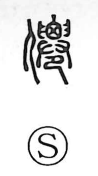

仙

Uncategorized
Kun: | On: sen
immortal ・ hermit ・ mountain ascetic ・ transcendent
Explanation
Shirakawa sees this as a picto‑phonetic graph. In its older form 僊, a component shows the act of lifting and removing a corpse—head and lower body grasped with both hands—so that the body could be set for a time in a boarded enclosure to weather before burial; on that basis, 僊 originally named that person. The later form 仙 writes the word with 山, treated as a reading marker that also evokes the mountains, and the meaning shifts to a person who cultivates the Way in seclusion: a mountain ascetic or Daoist transcendent. The character is already noted in the Shiming (Explanation of Names) of the late Han.